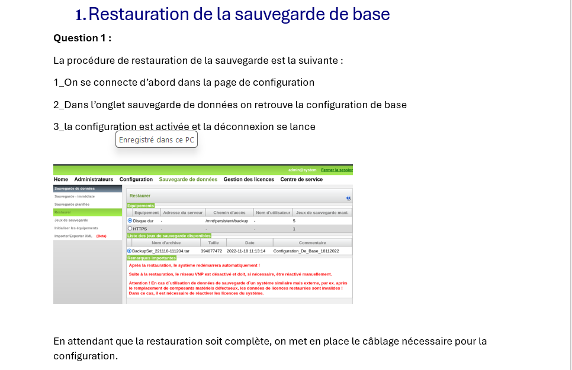
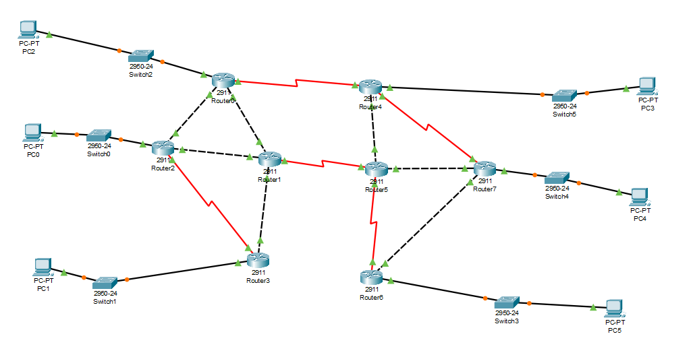
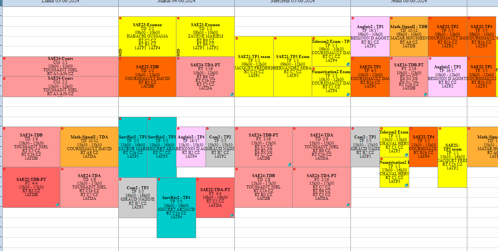
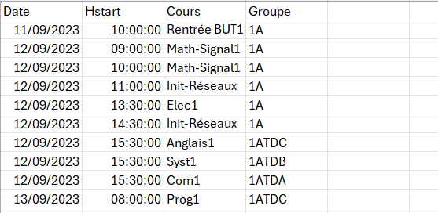
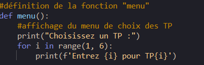
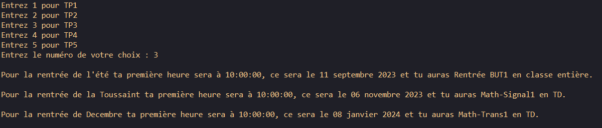
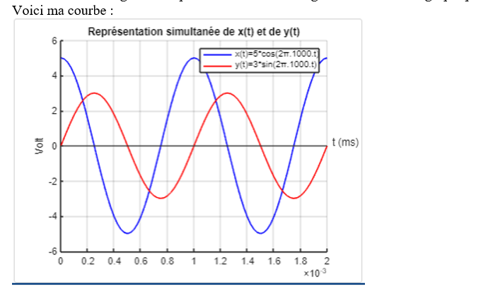
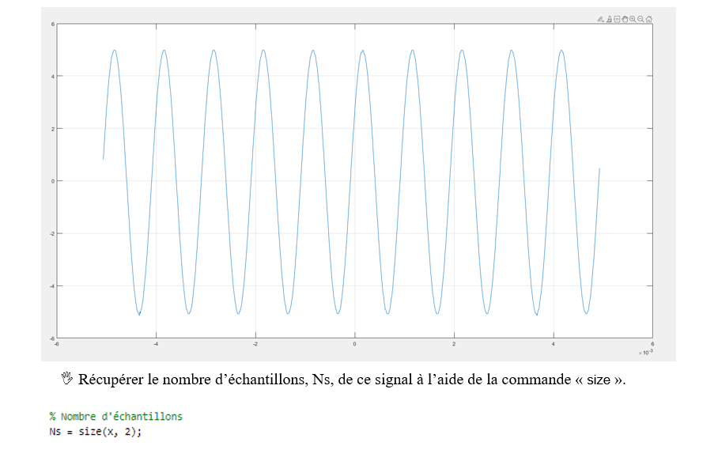

Compétences Techniques
Téléphonie : Configuration d'un Call Server
Maîtrise de la configuration pas-à-pas des serveurs d'appels et téléphones IP (Note de **19,5/20** à l'évaluation).

Réseaux : Plan d'adressage IP & Serveur DHCP
Conception d'architectures de communication et routage de machines sur Cisco Packet Tracer. Gestion de l'attribution automatique des configurations IP via DHCP.

Programmation Web : HTML / CSS
Création complète de pages web statiques structurées et stylisées pour des projets ou des portfolios.
Télécommunication : Mesures physiques
Mesure de la vitesse de la lumière au sein d'un câble coaxial en comparant les décalages temporels de signaux (1m vs 100m) à l'aide d'un oscilloscope et d'un générateur basse fréquence.
Qualités professionnelles (Soft Skills)
- Persévérance : Capable de rester concentré des séances entières pour résoudre des bugs de code complexes (Ex: Erreurs d'authentification en SAE23).
- Autonomie : Efficace seul face à un cahier des charges technique complexe (Ex: Réalisation en solo de TP de télécommunication de 3h).
- Travail d'équipe : Capacité à segmenter les tâches intelligemment lors de surcharges de travail pour maximiser la productivité du groupe.
Compétences Linguistiques
Anglais : Niveau B2
Projets Universitaires (SAE)
SAE15 - Extraction et Automatisation de Données (Note : 20/20)
Description : Extraction d'informations d'un calendrier de rentrée universitaire pour formater automatiquement les données utiles aux étudiants.
- Importation et tri sélectif automatisé sous Excel (suppression des métadonnées inutiles comme les salles ou dates de modification).
- Conversion automatique des fuseaux horaires natifs (GMT +0) vers le format horaire français.
- Développement d'un script d'exploitation affichant précisément les dates de reprises par groupe de TD/TP.




SAE22 - Traitement du Signal avec Matlab
Description : Développement d'outils de manipulation et d'analyse de signaux physiques temporels.
- Génération, affichage graphique et modification de signaux sinusoïdaux complexes.
- Calculs d'intégrales numériques via 3 méthodologies : rectangles, trapèzes et méthode de Simpson.
- Analyse mathématique directe de signaux réels exportés depuis un oscilloscope de laboratoire.




SAE14 - Conception de Portfolio & CV
Création d'une charte graphique professionnelle sur Canva et écriture complète de ce site web multipage adaptatif en HTML/CSS pur.